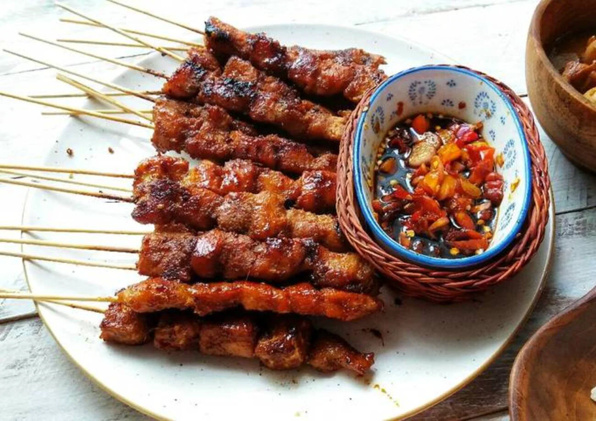

When visiting Tangerang City/South Tangerang, most people will probably recommend the laksa menu.
Laksa is a soupy, noodle-based dish made from rice flour. Unlike Betawi & Malaysian laksa, Tangerang laksa has thicker noodles like spaghetti.
Laksa is usually served with a rich, coconutty chicken broth. Potatoes, green beans, chicken pieces or eggs are also added. Laksa in Tangerang usually sells at a price starting from Rp.20K per portion.

If you are visiting Tangerang, you can try another specialty which is Sweet Sate Gerendeng.
Sweet sate Gerendang is a traditional food made from selected beef (such as head) which has a chewy & soft texture when bitten.
The basic seasoning of this sweet sate gerendeng consists of liquid brown sugar mixed with fine garlic, coriander, peppercorns, and other spices.
Like its name, this specialty food can be found in the Gerendeng area of Tangerang City with a price of Rp.5K per stitch.